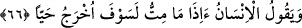
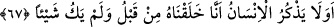

yalancı peygamberliğini ilân eden Müseyleme’ye veya Yemâme’de yahûdî bir kâhine
verildiği söylenmiştir. Allah, O’na öğretenin Rahmân olduğunu, Rahmân’ın da Allah
Teâlâ olduğunu şu âyette bildirerek onları reddetmiştir: “De ki: “O (Rahmân), benim
Rabb’imdir. O’ndan başka ilah yoktur. O’na dayandım, tevbem (dönüşüm) yalnız
O’nadır.” (er-Ra‘d, 13/30) Bu bilgiler İnsânu’l-uyûn’da geçmektedir.
Rahmân, Rahîm, İlâh, Hâlık, Kuddûs gibi sadece Allâh’a münasip olan isimlerle bir
başkasını isimlendirmek mekrûhtur. Nitekim Allah Teâlâ şöyle buyurmuştur: “Onlar
Allâh’a ortak koştular. De ki: Onları isimlendirin” (er-Ra‘d, 13/33) Bazı
müfessirler şöyle demişlerdir: “De ki: Onları” benim isimlerimle “isimlendirin”,
sonra bakın bakalım, onlara bu isimler yakışıyor mu? Yani onlara Benim isimlerim
yakışmaz. Nitekim Rasûlullah (a.s.), Azîz ismini değiştirmiştir. Çünkü izzet Allâh’a
mahsustur. Kula yaraşan ise zillet ve boyun eğmektir. Nitekim Ebkârû’l-efkâr’da böyle
denilmektedir.
66. İnsan “Ben öldükten sonra mı diri olarak çıkarılacağım?” diyor.
Übey b. Halef yeniden dirilmeyi inkâr ederek ve uzak görerek çürümüş bir kemiği
parçalayıp: “Muhammed, biz ölüp bu hale geldikten sonra yeniden diriltileceğimizi
iddia ediyor!” demişti.
“İnsan “Ben öldükten” çürüyüp bozulduktan “sonra mı” kabirden “diri olarak
çıkarılacağım?” Ölmüş olan bir kimse nasıl dirilir ve topraktan dışarı çıkar? “diyor”
Elbette insan, inkâr ettiği şeyin nasıl gerçekleşeceğine inanmaz ve inkâr eder.
Übey b. Halef, bu sözü öldükten sonra diriltilmenin gerçekleşeceğini tekid etmek için
söylememiştir. Çünkü o, zâten bunu inkar ediyordu.O, bu sözü Hz. Peygamber (a.s.)’ın
sözünü naklederek söylemiştir. Hz. Peygamber (a.s.) sanki “İnsan öldüğü zaman elbette
diri olarak çıkarılacaktır.” buyurmuş, kâfir (Übey b. Halef) ise bunu inkâr etmiş ve
Peygamberimiz (s.a.)’in sözünü nakletmiştir. Âyet de bunun üzerine inmiştir. Cürcânî,
bu bilgiyi Nazmu’l-Kur’ân adlı eserinde nakleder.
67. İnsan önceden hiçbir şey değilken kendini nasıl yarattığımızı düşünmüyor mu?
“İnsan önceden” şu anda bulunduğu varlık hâlinden önce “hiçbir şey değilken” sırf
yokluk iken “kendini nasıl yarattığımızı düşünmüyor mu?” Âyetteki soru, inkârîdir ve
ayıplamayı ifade etmektedir. Yani insan bunu düşünmüyor, dolayısıyla onun bu hareketi